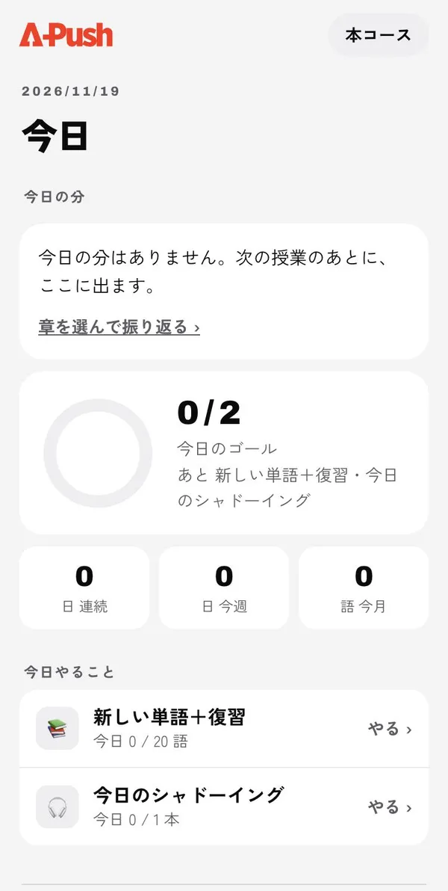
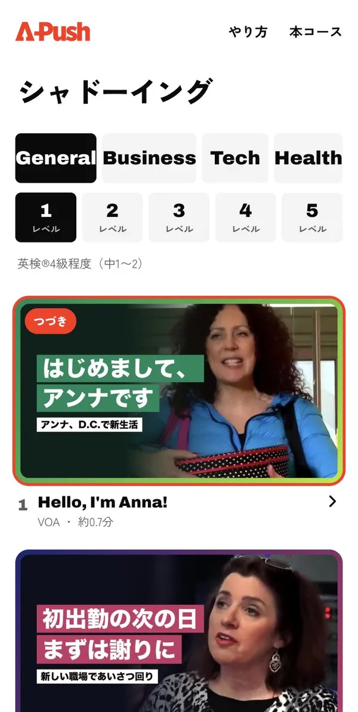
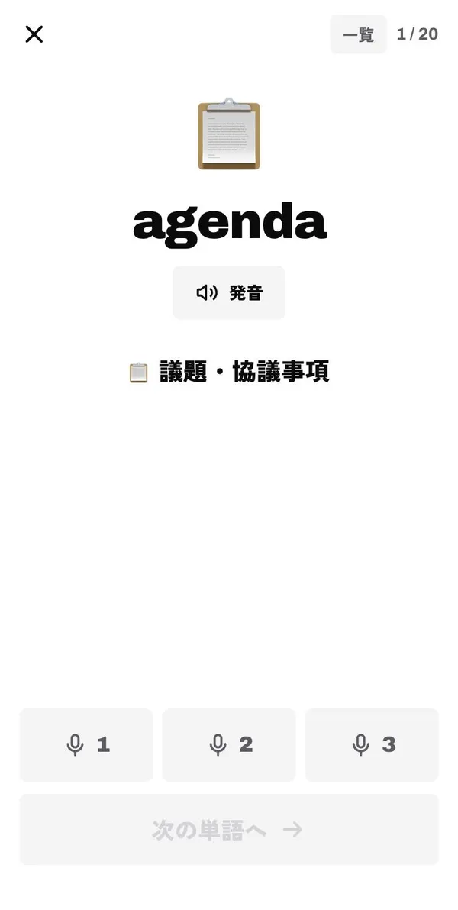
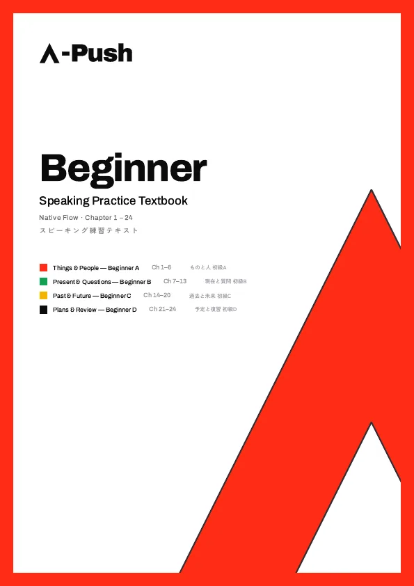
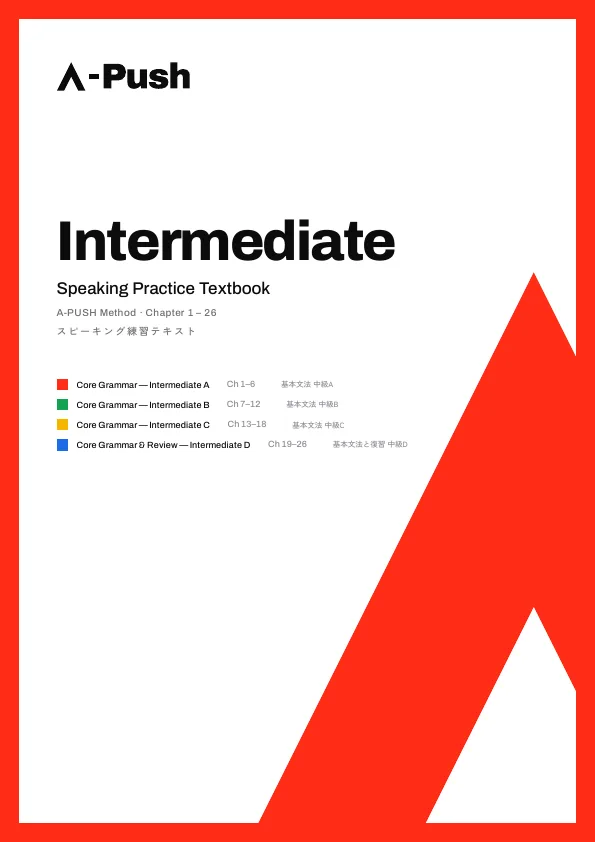
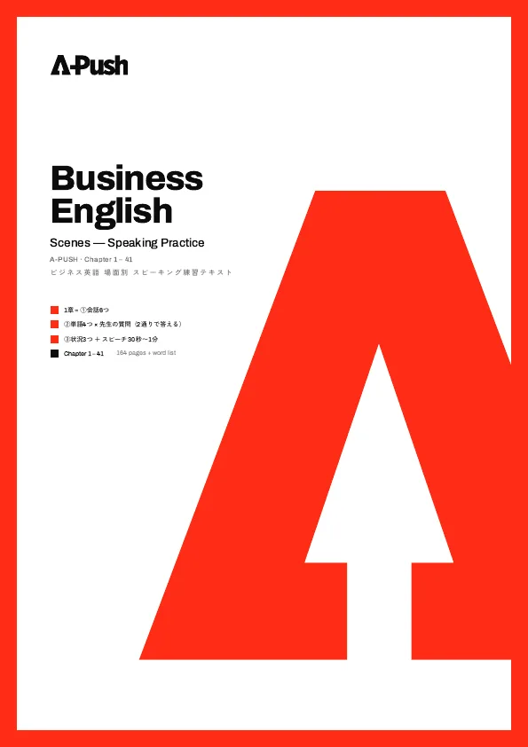

AI時代、英語で
選べる仕事が増える
英語が話せる自分を、
想像してみてください。
自分から発言。
海外赴任や転職で、
年収が上がる道も。
同僚と、雑談で
笑い合う。
気軽に話す。
でも、ここで
止まってしまう方が
ほとんど。
代表も、15歳のニューヨークで
誰とも話せなかった。
フィリピンの語学学校で、
「とにかく話しまくる学習法」を体験。
それを作り直したのが、A-PUSH Method。
英語は、すでに頭の中にある。
日本人は、実はかなり英語の知識がある。
文法・読解・単語力。
かなりレベルが高いです。
知識があるのに、
出てこない。
文字ならわかる。
でもネイティブのリズムで言われると、
すぐには答えられない。
なぜなら、脳の外に出す
トレーニングを、
していないから。
足りないのは、
知識を出すこと。
知識を溜め込むだけで、
口から出していない。
聞いて、まねて、声に出す。
知っている英語を、使える英語に。
だから私たちは、
アウトプットを
真剣に行う。
9割レッスンの約9割が、話す時間。
型を1つ決めて、
単語を入れ替えて、
何百回も。
8割伝われば、十分。
ただし、正しい型で。
間違えたら、
その場で言い直す。
運動と、知識。
知識を溜め込むだけでは、凝り固まって
頭の中から出てこなくなる。
入れるのと同じくらい、出すことが大切。
A-PUSH は、
あなた専用で作ります。
あなただけの計画
合わせた単語帳とトレーニング
伸びる仕組みは、3つ。
そばで伴走
マンツーマンで話す
少しずつ続ける
AIコーチが管理しながら、
シャドーイング＆
単語トレーニング。
いつ・何分・何を学習したかが記録される。
AIコーチが常に見守り、
学習が止まったら電話で励ます。
アプリで、
毎日続ける。
シャドーイング・単語・
レッスンの復習。
レッスンの外も、
英語に触れる。

シャドーイングとは。
英語を聞きながら、
少し遅れて、そのまま声に出す。
英語を何度も聞いて口に出すことで、
英語の音を覚える。
すると少しずつ英語が
バラバラに分かれて
聞こえるようになってくる。
シャドーイングで
変わるあなた。
シャドーイングは、
毎日1本。
動画を3回聞いて、
まねて言う。
最後に、質問に答える。
レベルは5段階。

単語は、
忘れかけた頃に。
忘却曲線に合わせて、
忘れかけた頃に、
もう一度。

試験は、すべて
模擬テストで
練習できる。
英検®・TOEIC・
IELTS・TOEFL。
10分のトレーニングから、
パートごとの練習まで。

ネイティブと、
マンツーマン。
1回50分。
講師は全員ネイティブ。
目黒駅徒歩1分の
A-PUSH Office か、
オンラインで。

コーチが、
毎日そばにいる。
毎日「今日のPUSH」。
毎週、レッスンの最初の5分。
月1回の面談。

だから、A-PUSH は
いつも本気です。
そして、あなたを本気にします。
日本の英語教育、
英語コーチングは、
なぜいつまでも
話せないのか。
ビジネスだから。
スクールのゴールは、
生徒にいかに長く通ってもらうか。
だから、話せなくてもいい。
日本の英語教育は、
本質からずれている。
入試とTOEIC高得点のための、知識ゲーム。
実際に必要なのは、
コミュニケーション能力と、
音（リズム）の認知。
英語は、
ただ詰め込めば
いいわけではない。
日本の英語教育は、
知識をどんどん詰め込み、
合っているかを確かめ続ける。
でも言語を学ぶには、
やらないといけないことが2つある。
頭の中には、
すでに英語がある。
日本人の頭の中には、
すでにたくさんの英語の知識がある。
必要なのは、それをどう頭から出すか。
その筋肉をほぐすのが、A-PUSH の仕事。
ビギナーコース
Be動詞から、
質問して答えられるまで

Be動詞すらわからない、、、ところから
質問ができて、
答えられる。
5W1H＋現在形・過去形・未来形まで、
自由に使えるのが目標！
カリキュラム（全24章）
- What is this? / What is that?
- What colour is this?
- How many?
- Who is this?
- Whose is this?
- Occupations
- Adjectives (big, small, hot, cold)
- Present Progressive
- Simple Present (I / You / We / They)
- Simple Present (He / She / It)
- Frequency Adverbs
- 5W1H — What / Who
- 5W1H — Where / When
- 5W1H — Why
- 5W1H — How
- Simple Past
- Where? (Past)
- Past Progressive
- Past Simple vs Past Progressive
- Will (Future)
- Be Going To
- Will vs Be Going To
- Tense Review
- Open Questions Review
1つの章は、2つのステップ。
インターメディエイト
コース
自分の考えを、
はっきり伝える

自分の考えを、
はっきり、
しっかり伝える。
カリキュラム（全26章）
- 現在完了（経験・完了）・東京を訪ねる
- 現在完了（継続）・東京を訪ねる
- 接続詞 and / but
- 現在完了と過去形 ・テスト勉強
- 比較級 ・選手を比べる
- 接続詞 so / because
- 助動詞 should ・先生に質問する
- 助動詞 must / have to ・1週間の予定
- must not と don't have to ・禁止と「しなくていい」
- 接続詞 although / though
- 助動詞 can ・天気と遊び
- 最上級 ・かばんとりんご
- 接続詞 if / whether
- 関係代名詞 who ・まわりの人たち
- 接続詞 when / while
- 関係代名詞 which ・本屋の通り
- 接続詞 before / after
- 関係代名詞 that ・仕事をする人たち
- 接続詞 as soon as / as long as
- 不定詞 パート1 ・毎日の予定
- 接続詞 in case / even if
- 不定詞 パート2 ・天気予報
- 動名詞 ・大阪の見どころ
- 接続詞 ・町の地図
- 接続詞の復習 パート1
- 接続詞の復習 パート2
1つ1つの文法を、
イメージで
使えるようにする。
ビジネスコースも、
あります。
場面別の全41章
